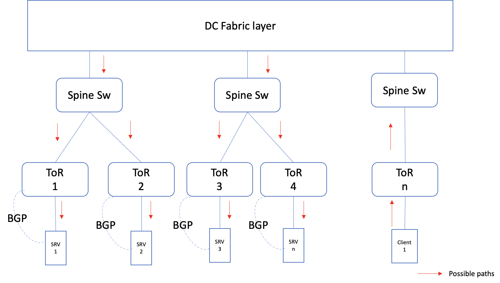

擴展
部署大規模應用程式，需要更深入了解基礎設施的能力，包含資源可用性、故障域、以及擴展選項，如使用任播（anycast）、第4層/第7層負載平衡器、基於 DNS 的負載平衡。
建立大規模應用程式是一項複雜的工作，必須涵蓋設計、開發以及運營化的多個層面。本章節將討論部署大規模應用時需要考量的重點。
故障域
在任何基礎設施中，由於硬體或軟體問題引起的故障都是常見的。雖然這些故障會影響服務可用性，但它們確實會發生，實際的目標是盡量將這些故障降到最低。因此，在部署任何服務時，必須考慮某些節點的故障或不可用情況。
伺服器故障
伺服器可能因為電源、網路介面卡（NIC）或軟體錯誤而故障。有時候故障並不完全，可能只是 NIC 發生錯誤，導致部分封包遺失。這是非常常見的情況，對有狀態（stateful）服務的影響更大。因此在設計此類服務時，需要容忍一定程度的故障。
ToR（Top of Rack）故障
這是常見的情況之一，指將伺服器連接到葉層交換機（leaf switch）的 ToR 發生故障，導致整個機櫃也無法運作。可能有多台同服務的伺服器因此停擺。需要規劃能承受多少伺服器損失而不會使其他伺服器過載。根據此規劃，服務可以分布在多個機櫃中。這些評估會依 ToR 設計的韌性而異，相關內容參見 ToR 連接 章節。
站點故障
此處的站點故障為通用術語，可能指某個站點的特定服務中斷，例如因新版部署故障、服務依賴的防火牆、負載平衡器等設備故障，或與遠端站點（可能韌性較差）連線中斷，或關鍵服務如 DNS 出現問題。這類事件雖不常見，但影響不可小覷。
總結來說，設計應用程式時必須考慮這些故障場景，讓應用本身具備足夠的容錯能力，能從預期外的故障中恢復。這不僅有助於故障處理，對於計畫內的維護工作（如部分設備暫時下線）也非常有幫助。
資源可用性
部署大規模應用時另一重要面向是基礎設施的可用性及服務依賴的功能。例如，若為提高機櫃韌性決定將服務分散到五個機櫃，但若服務需要負載平衡器（用來分散進入連線到不同伺服器），且並非所有機櫃皆支持負載平衡器，會造成挑戰。或者可能沒有足夠符合最低規格的機櫃可用。遇到這類情況，最好的方式是確認需求與差距，並與基礎設施團隊一同解決。
擴展選項
當應用分布到多個機櫃時，必須將流入的流量分配到這些伺服器。可考慮以下方式：
任播（Anycast）
這是迅速實現跨多機櫃流量分配的方式。每個服務叢集裡的伺服器都會向資料中心交換機網路廣告一個環迴地址（IPv4 /32 或 IPv6 /128 地址），通常使用 BGP 協定。服務設定監聽此環迴地址。客戶端嘗試連接服務時，會解析到此虛擬地址並轉送請求。資料中心交換機網路會將每個流量導向不同可用的下一跳（最終分布到該服務叢集的所有伺服器）。
注意：資料中心交換機會基於 IP 封包表頭計算雜湊值，可能包含來源與目的地址、來源與目的埠號、MAC 地址及 IP 協定編號等混合。根據此雜湊值決定下一跳。由於同一流的所有封包表頭值相同，因此該流內的所有封包都會走同一路徑。

圖 1：任播架構示意
為達成流量在伺服器間的均勻分布，必須保證各機櫃和叢集配置的統一性。不過任播是基於流（flow）分配，若存在大型流量（elephant flows），部分伺服器可能會承受較高流量。
若某伺服器或 ToR 故障，該環迴地址的廣告會停止，新的封包則會導向其他仍可用的伺服器。
負載平衡器
另一常用方式是負載平衡器。透過負載平衡器設置一個虛擬 IP（VIP），客戶端連接此 VIP 存取服務。負載平衡器將連線重定向到實際執行服務的伺服器之一。負載平衡器會定期檢查伺服器健康狀態，若伺服器檢查不通過，負載平衡器會停止將流量分配給該伺服器。
負載平衡器可部署在單臂模式（single-arm mode），流量入 VIP 後由負載平衡器轉送，而伺服器回應的流量則直接發送給客戶端；另一種為雙臂模式（two-arm mode），則流量的雙向都會通過負載平衡器。

圖 2：單臂模式

圖 3：雙臂模式
此法缺點之一為，在大規模環境下，負載平衡器可能成為瓶頸，限制高流量量或高併發連線數。
基於 DNS 的負載平衡
此法類似上述負載平衡器方案，不同點在於負載平衡是由 DNS 執行。當客戶端查詢服務的 DNS 記錄時，DNS 會回傳不同伺服器的 IP 位址以分散流量。DNS 伺服器須執行健康檢查，以判斷哪些伺服器處於正常狀態。
此方法可減輕負載平衡器的瓶頸問題，但需要較短的 DNS 記錄 TTL，以便快速將故障伺服器排除出輪替，這也意味著 DNS 查詢量會大幅增加。